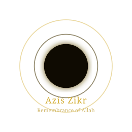

Azis Zikr
Digital Tasbih
🏠 Zikr
📖 Quran
🕌 Prayer
📊 Stats
🤲 Duas
💫 About
🌙
🕌 Prayer Times
Stay connected to your five daily prayers
جاري التحميل…
Loading…
Today's Salah Times
📍 Jabalpur, Madhya Pradesh, India
⏳
Loading prayer times…
🧭 Qibla Direction
N
S
E
W
—°
Allow location to show Qibla direction